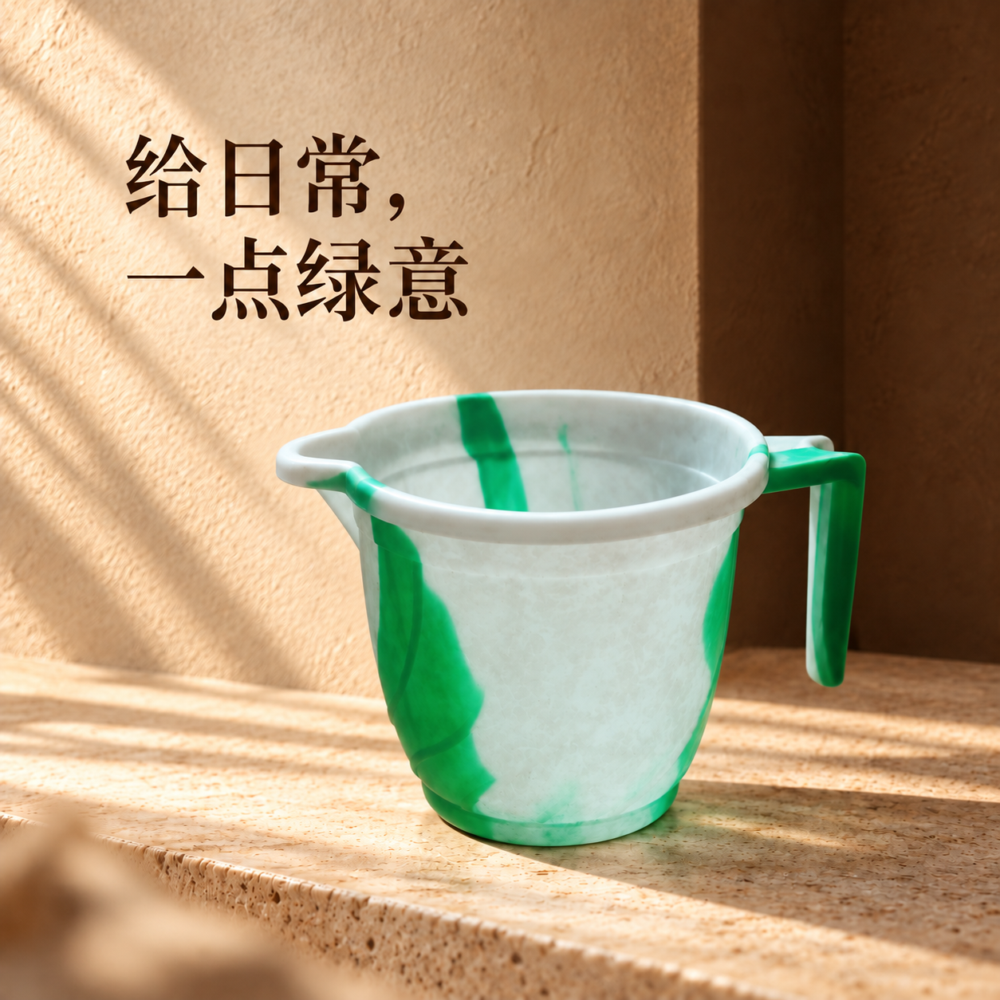

2026.09.15 / Codex 原生能力
从一张实拍，
到一套
电商素材。
用一只真实的旧摩卡壶，走完八个技能。看设计如何形成，图片如何制作，以及有问题时如何修正。
按使用顺序看演示 ↗
先把任务安排清楚。
工作台负责理解需求、整理事实并调用适用的能力。你不用依次背出八个技能名。
这次拿到的资料
一张旧摩卡壶的真实照片。看得见多面银色壶身、黑色顶钮与侧柄、左侧壶嘴，以及水渍和旧痕。
容量、材质成分、品牌型号、炉具兼容性没有确认，留空。
这次安排的结果
摩卡壶：白底、场景主视觉、中文特点页、英文特点页。
第二件水勺：用于展示同一批次的独立原图、状态读取与续做。
本次 2 件商品，共 5 个图位；演示编号不是商品型号。
把审美变成可复用的约定。
这一轮选择温暖的咖啡色调。深浅背景根据商品变化，整体沿用侧光、清楚的商品焦点和精致排版。
光线
左上方侧光、明确接触阴影，保留银色和绿白色的商品本色。
版式
宋体大标题、独立文字区，主视觉与特点页分别安排构图。
复用范围
已保存本次演示品牌文件。没有把这次建议设成你的长期店铺偏好。
一张图，解决一个明确问题。
把蓝色墙面与桌面换成干净白底。壶身保持为有旧痕的原物，摄影变得清楚，物品成色不冒充全新。


一套图，各自有用。
复用白底图，再补主视觉和特点页。它们分别负责看清商品、表达氛围、说明外观特点。

换语言，延续同一页设计。
英文稿以中文特点页为编辑目标，保留商品、分栏和指引线。商品自己的刻字不翻译。

| 中文 | 英文 |
|---|---|
| 形有棱角， | Defined lines. |
| 日常有温度 | Warm moments. |
| 多面壶身 | Faceted body |
| 开放式侧柄 | Open-ended handle |
| 01 / 02 | 保持不变 |
营销文字已看图逐项核对。细小商品刻字仍不能认定精确还原，保留待核对状态。
一批商品，分别记清楚。
完成摩卡壶后，重新读取本地状态，只继续尚未生成的水勺。两个商品分别使用自己的原图与事实。
| 商品 | 续做前 | 续做后 |
|---|---|---|
| MOKA001 摩卡壶 | 4 图已生成 细节待核对 | 4 图保持原样 文件校验值一致 |
| SCOOP001 水勺 | 1 图待生成 | 1 图位有 2 版 完成一次修正 |
水勺采用更浅的暖白背景，与深棕摩卡壶主视觉共用光线和字体基调。这是品牌内适配，不是把商品全部做成相同颜色。

好看之后，还要看有没有改错。
本轮确实发现了一个问题并执行修正。原图、初版与修正版都保留下来，让检查结果有据可查。

{kind=link}
{kind=link}
主要结构、版式与营销文字可以展示效果。摩卡壶的刻字、水渍和水勺的细纹理仍不能视作精确复原。因此 5 个最新图位都以“待核对草稿”交付，没有替用户选图。
6 个文件均通过本次方图、像素尺寸和体积要求。默认导出拒绝了尚未通过的图；为了展示完整过程，本次使用带状态的草稿导出。文件规格通过与商品保真是不同结论。
图片与文案，使用同一份事实。
根据已经整理的可见特征，写标题、特点与描述，再用现有图片编排详情草稿。只要文案时，可以独立使用。
摩卡壶｜银色多面壶身
与黑色开放式侧柄
多面轮廓，黑色侧柄与顶钮，左侧壶嘴和棱面壶盖。
没有写不锈钢、300 mL、电磁炉通用；这些信息都没有依据。
第一次用，直接这样说。
阅读完整流程解读 ↗用 $huoying-studio，基于我提供的实拍图和参数表，制作一套电商素材：一张白底图、一张精致场景图、一张特点图，并给特点图做英文版。风格根据商品设计，整套协调；保持商品结构、标识和颜色，未知参数不要编造。完成后对照原图检查，把需要我确认的地方列出来，再整理图片与上架文案。
后续可以直接说“第二张标题小一点”“把特点图改成英文”“继续下一批”。明确选择哪一版后，再整理所选图片交付。